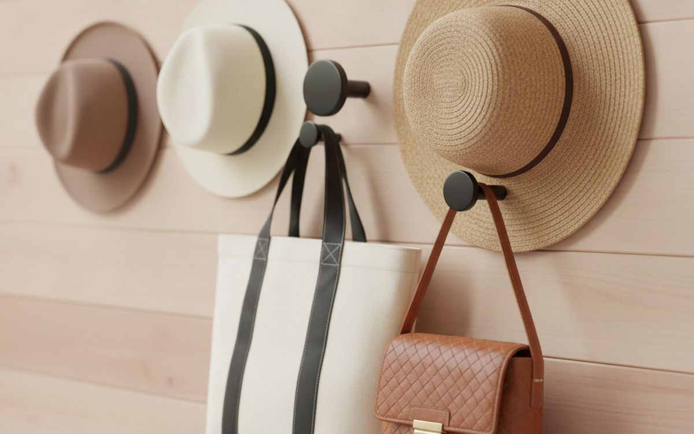
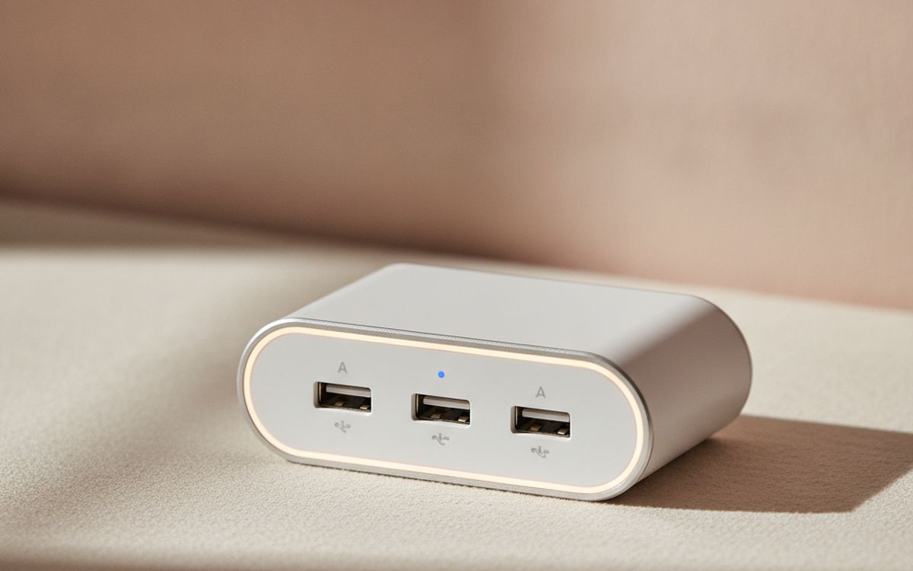
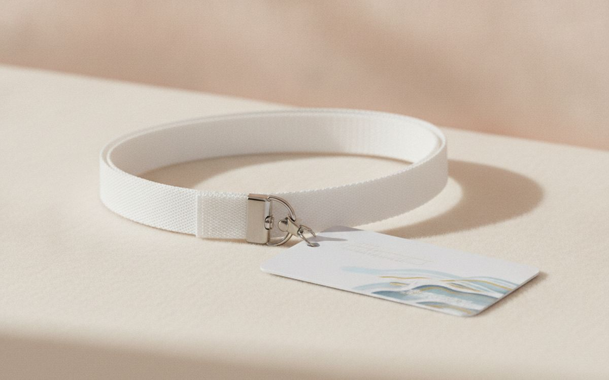
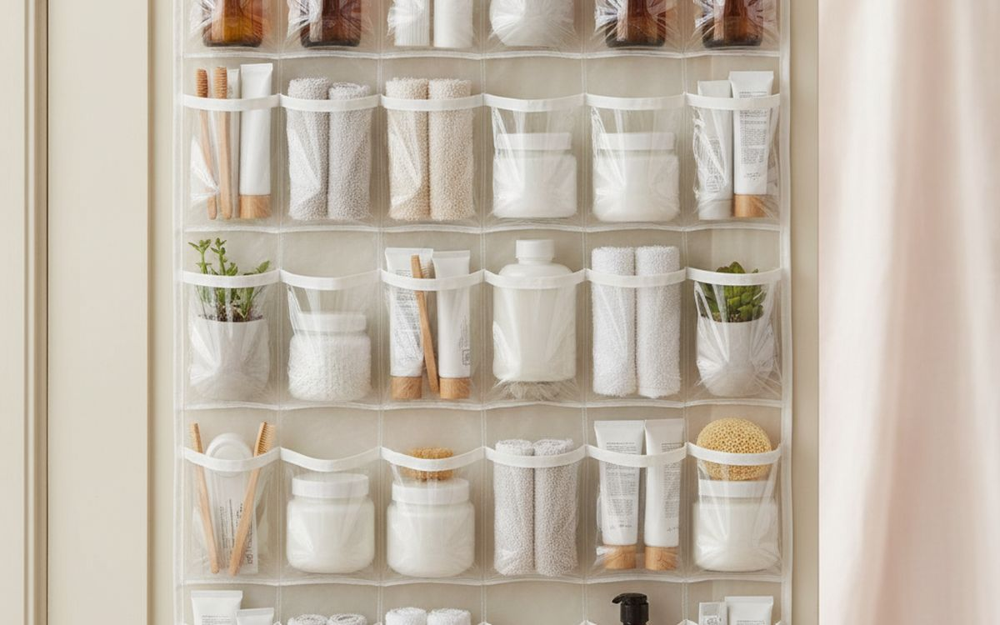
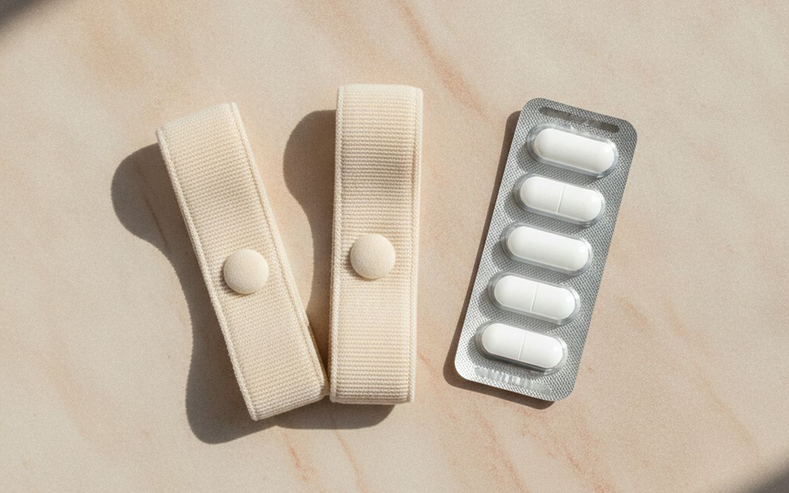
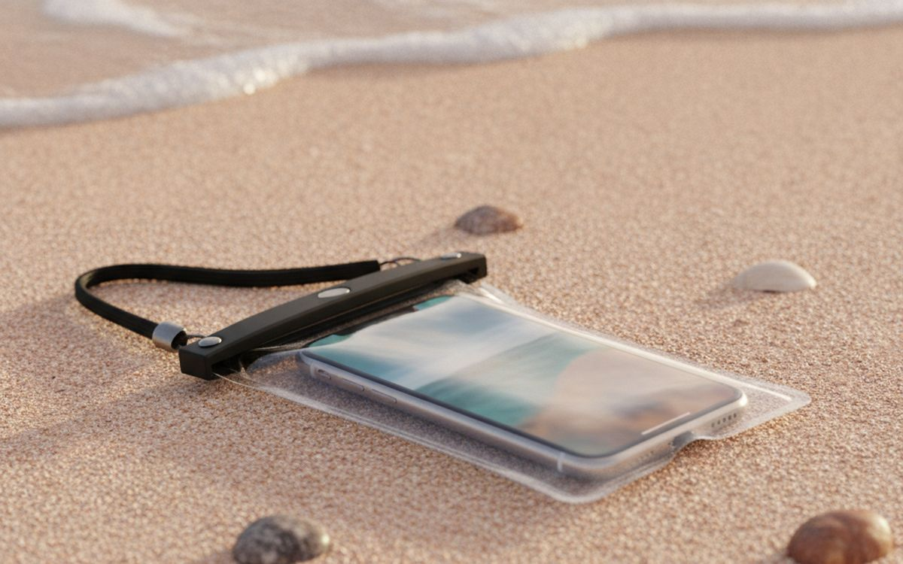
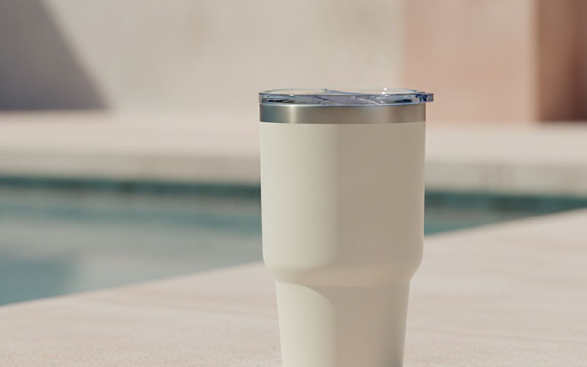
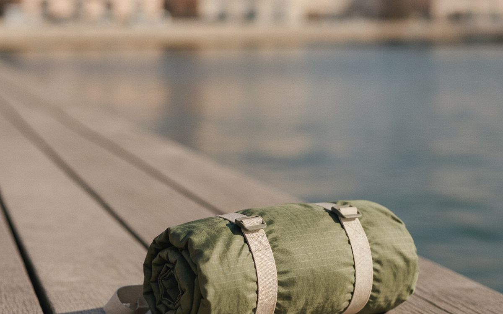
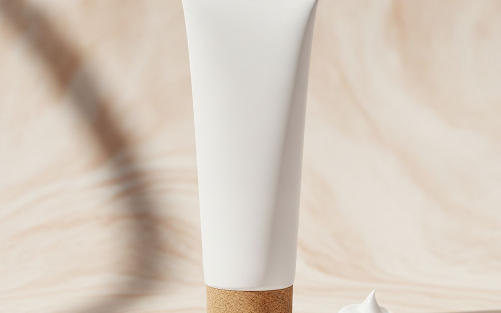
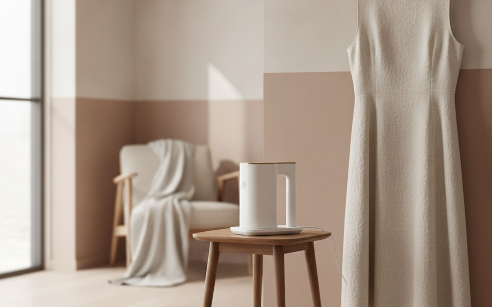

Cruise cabins are small, often with one or two power outlets, metal walls, and a lot of time spent between the pool, the dining room and ports. First-time cruisers pack like it is a hotel stay and discover on day one that there is nowhere to hang anything and nowhere to charge four phones. Experienced cruisers bring a few small items that make the cabin work.
This list is ordered by how much each item helps on board. Most are cheap. The first is about rules: some common travel items are banned, and security will confiscate them at boarding.
Prices below are approximate street prices at the time of writing and move around constantly, especially during sale events. Treat them as a rough band for budgeting, not a quote. Always check the live listing before you buy.
The short version
Magnetic hooks
The cheapest cabin upgrade
Disclosure. The links on this page are affiliate links. If you buy through one we may earn a commission at no extra cost to you. It does not affect what makes this list or the order it is in.
How we picked
These picks come from cruise line packing guidance, experienced cruiser communities and long-run owner reports, cross-checked against current retail listings. We have not personally tested every item here. Cruise line rules differ and change; check your line's prohibited items list before you pack.
At a glance
Prices are approximate at the time of writing and change often.
The picks

01 · The cheapest cabin upgradeMagnetic hooks
Cruise cabin walls are usually metal, so strong magnetic hooks stick anywhere and add hanging space for hats, bags, lanyards and wet swimwear. They leave no marks. A pack of ten transforms a small cabin. Choose heavy-duty ones rated for a few pounds each. The case for it: adds hanging space anywhere, no marks, and very cheap. The trade-off is real: only work on metal walls and weak magnets slide down, so weigh that against how often it would actually get used. At $10-15, it earns its place on this list without asking for a big up-front commitment either way.
$10-15Trade-off: Only work on metal walls
Why it is here
- Adds hanging space anywhere
- No marks
- Very cheap
Worth knowing
- Only work on metal walls
- Weak magnets slide down

02 · Charging everythingA cruise-approved USB charging hub (no surge protector)
Cabins often have only one or two outlets, and families bring many devices. Most cruise lines ban surge-protected power strips, which are confiscated at boarding. A non-surge USB hub with several ports charges everything from one outlet. Check your cruise line's rules first. The case for it: charges many devices from one outlet, small, and cheap. The trade-off is real: surge-protected versions are banned and check your line's rules, so weigh that against how often it would actually get used. For $15-30, it is a small, low-risk addition to the list rather than a centrepiece purchase you need to think hard about.
$15-30Trade-off: Surge-protected versions are banned
Why it is here
- Charges many devices from one outlet
- Small
- Cheap
Worth knowing
- Surge-protected versions are banned
- Check your line's rules

03 · Keeping the card handyA lanyard for your key card
On most ships, your key card is your room key, ID and payment card. A lanyard or card holder keeps it handy and hard to lose. Retractable holders are convenient. Some lines sell them on board at higher prices. The case for it: never lose your key card, quick to use, and cheap. The trade-off is real: not everyone likes wearing one and some ships use wearables instead, so weigh that against how often it would actually get used. Priced around $5-10, it is easy to justify even if it only ends up getting occasional rather than daily use.
$5-10Trade-off: Not everyone likes wearing one
Why it is here
- Never lose your key card
- Quick to use
- Cheap
Worth knowing
- Not everyone likes wearing one
- Some ships use wearables instead

04 · Small bathroomsAn over-door organiser
Cruise bathrooms have little shelf space. A clear over-door shoe organiser holds toiletries, sunscreen, chargers and small items, so everything is visible and the counter stays clear. The case for it: frees up space, everything visible, and cheap. The trade-off is real: doors vary in thickness and heavy items make it swing, so weigh that against how often it would actually get used. At $10-20, it earns its place on this list without asking for a big up-front commitment either way. As with anything on this list, check the exact listing details and current price before adding it to a cart.
$10-20Trade-off: Doors vary in thickness
Why it is here
- Frees up space
- Everything visible
- Cheap
Worth knowing
- Doors vary in thickness
- Heavy items make it swing

05 · Rough seasMotion sickness bands or remedies
Even large ships move in rough seas. Pack acupressure bands, ginger and your preferred medication, and talk to a pharmacist or doctor about options. Taking medication before symptoms start works best. The case for it: prepared for rough days, cheap, and small. The trade-off is real: some medications cause drowsiness and bands help some people more than others, so weigh that against how often it would actually get used. For $10-20, it is a small, low-risk addition to the list rather than a centrepiece purchase you need to think hard about. It is a minor purchase in the context of the whole set-up, but the kind that is easy to regret skipping once you notice the gap.
$10-20Trade-off: Some medications cause drowsiness
Why it is here
- Prepared for rough days
- Cheap
- Small
Worth knowing
- Some medications cause drowsiness
- Bands help some people more than others

06 · Beach and snorkel excursionsA waterproof phone pouch
Port days mean beaches, boats and snorkelling. A waterproof pouch protects your phone while still allowing photos. Test it with tissue first. The case for it: protects phone, photos in water, and cheap. The trade-off is real: touchscreens are harder to use and test for leaks, so weigh that against how often it would actually get used. Priced around $8-15, it is easy to justify even if it only ends up getting occasional rather than daily use. None of that makes it essential for everyone reading this, only worth knowing about if the description above matches how you actually use the space.
$8-15Trade-off: Touchscreens are harder to use
Why it is here
- Protects phone
- Photos in water
- Cheap
Worth knowing
- Touchscreens are harder to use
- Test for leaks

07 · Drinks on deckA reusable insulated tumbler
Deck drinks warm up fast in the sun. An insulated tumbler with a lid keeps drinks cold and stops spills. Many bars will fill your own cup. Check your line's policy. The case for it: cold drinks longer, fewer spills, and reusable. The trade-off is real: some lines limit cup sizes and bulky in luggage, so weigh that against how often it would actually get used. At $15-30, it earns its place on this list without asking for a big up-front commitment either way. As with anything on this list, check the exact listing details and current price before adding it to a cart.
$15-30Trade-off: Some lines limit cup sizes
Why it is here
- Cold drinks longer
- Fewer spills
- Reusable
Worth knowing
- Some lines limit cup sizes
- Bulky in luggage

08 · Port daysA small day bag for excursions
A packable daypack carries water, sunscreen, a towel and souvenirs on port days, then folds into your luggage. Choose one with a zipped pocket for passports and cards. The case for it: carries day essentials, packs small, and cheap. The trade-off is real: thin fabric tears and keep valuables zipped, so weigh that against how often it would actually get used. For $15-30, it is a small, low-risk addition to the list rather than a centrepiece purchase you need to think hard about. It is a minor purchase in the context of the whole set-up, but the kind that is easy to regret skipping once you notice the gap.
$15-30Trade-off: Thin fabric tears
Why it is here
- Carries day essentials
- Packs small
- Cheap
Worth knowing
- Thin fabric tears
- Keep valuables zipped

09 · Deck days and snorkellingReef-safe sunscreen
Sun at sea is strong because of reflection off the water. Some destinations, including Hawaii and parts of the Caribbean, restrict sunscreens with certain ingredients. Mineral sunscreens with zinc oxide are widely accepted. Bring more than you think. The case for it: sun protection, meets reef rules in many places, and cheaper than on board. The trade-off is real: can leave a white cast and rules vary by destination, so weigh that against how often it would actually get used. Priced around $10-20, it is easy to justify even if it only ends up getting occasional rather than daily use.
$10-20Trade-off: Can leave a white cast
Why it is here
- Sun protection
- Meets reef rules in many places
- Cheaper than on board
Worth knowing
- Can leave a white cast
- Rules vary by destination

10 · Formal nightsA wrinkle release spray or travel steamer
Many cruises have formal nights, and clothes come out of suitcases creased. Irons are usually banned. A wrinkle release spray is allowed on most lines. Some lines ban travel steamers, so check first. The case for it: smooth clothes for formal nights, small, and cheap. The trade-off is real: steamers are banned on some lines and sprays do not fix deep creases, so weigh that against how often it would actually get used. At $10-35, it earns its place on this list without asking for a big up-front commitment either way. As with anything on this list, check the exact listing details and current price before adding it to a cart.
$10-35Trade-off: Steamers are banned on some lines
Why it is here
- Smooth clothes for formal nights
- Small
- Cheap
Worth knowing
- Steamers are banned on some lines
- Sprays do not fix deep creases
Common questions
Can I bring a power strip on a cruise?
Most lines ban surge-protected strips. Non-surge USB hubs are usually allowed; check your line's rules.
What should I not pack for a cruise?
Irons, surge protectors, candles and some appliances are commonly banned. Check your line's list.
Do magnetic hooks work in all cabins?
Most cabin walls are metal, but not all. They are cheap enough to try.
How do I avoid seasickness?
Choose a mid-ship, lower-deck cabin, and bring bands or medication recommended by a pharmacist.
Today's deals
See what is discounted right now.
Deals →← All guides
As an AliExpress affiliate we earn from qualifying purchases. Prices and availability are accurate as of the date of publication and may change.